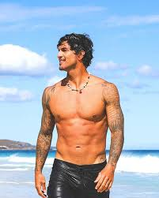
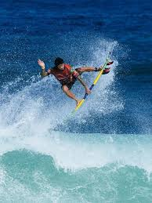
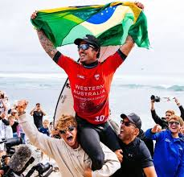

Quem é Medina?
Gabriel Medina é um surfista brasileiro, considerado um dos maiores talentos do surf mundial. Nascido em Maresias, São Paulo, ele começou a surfar ainda criança e rapidamente chamou atenção por sua habilidade e estilo agressivo nas ondas.
Gabriel Medina é um surfista brasileiro, considerado um dos maiores talentos do surf mundial. Nascido em Maresias, São Paulo, ele começou a surfar ainda criança e rapidamente chamou atenção por sua habilidade e estilo agressivo nas ondas.
Estilo de Surfe:
Gabriel é conhecido por seu surfe aéreo, manobras inovadoras e grande competitividade. Ele sempre busca altas pontuações com movimentos arriscados, especialmente em grandes ondas e etapas decisivas.
Gabriel é conhecido por seu surfe aéreo, manobras inovadoras e grande competitividade. Ele sempre busca altas pontuações com movimentos arriscados, especialmente em grandes ondas e etapas decisivas.
Impacto no Brasil:
Como um dos maiores embaixadores do surfe brasileiro, Medina inspirou uma nova geração de surfistas no Brasil. Ele ajudou a popularizar o esporte e a elevar o status do país como uma potência no cenário global do surf.
Como um dos maiores embaixadores do surfe brasileiro, Medina inspirou uma nova geração de surfistas no Brasil. Ele ajudou a popularizar o esporte e a elevar o status do país como uma potência no cenário global do surf.